Fundamentals of DC Testing
Aether Lee
Paper ID 115868
Abstract
In the beginning of this lecture, Ohm's law, which is the most important electric law regarding DC testing, will be reviewed. Then, in the second section, we will discuss resistance measurement.
1. Ohm's Law
Probably no one will disagree that DC testing is all about Ohm's law which can be expressed in a simple form:
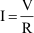
Equation (1)Literally, as shown in Figure 1, the current flowing through a resistor is proportional to the voltage across it and reverse proportional to the resistance of it.
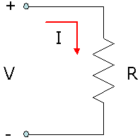
Figure 1: Ohm's Law
In another way of expression, for an ideal resistor, vary the voltage across it and note the value of correspondent current, we can have a straight line passing through origin, as shown in Figure 2.
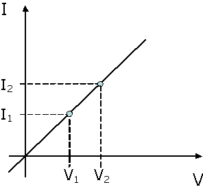
Figure 2: I-V curve of an ideal resistor
The slope of the line is the reverse of the resistance from Ohm's law. The slope can be derived by
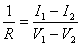
Equation (2)Now, consider that what has been put in Figure 1 is not an ideal resistor so that the I-V curve in Figure 2 is no longer a straight line.
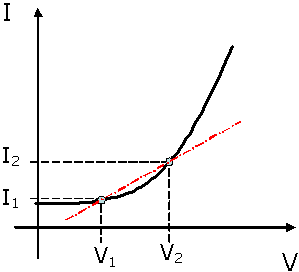
Figure 3: V-I curve of an electric component
As shown in Figure 3, calculated resistance from equation (2) does not represent the component. However, if we take derivative at V1, i.e. push V2 as close as possible in equation (2), we have
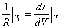
Equation (3)The reverse of the resistance is now the tangent of the I-V curve at V = V1. Equation (2) in a fact is an rough estimation of equation (3) in the range of [V1, V2].
The derivative form of Ohm's law reminds us about the equations of capacitance and inductance.
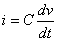
Equation (4)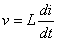
Equation (5)If Laplace Transform is performed on both sides of equation (4) and (5), we have following equations which are similar to Ohm's law.
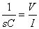
Equation (6)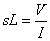
Equation (7)In other words, we can express the relationship of time varying current and voltage by treating capacitance and inductance as resistance like quantity, which is called "impedance" and usually denoted by "Z", in s-domain.
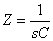
Equation (8)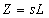
Equation (9)By replacing capacitors and inductors with impedance expression derived from equations (8) and (9) in Kirchhoff's circuit law, Ohm's law and its extended version can be applied to analyze complex network containing resistors, capacitors and inductors.
3. Resistance measurement
Before we go too far, let's draw back to consider the fundamental question: how to measure the resistance. A straight forward setup to do so is to connect a resistor with a voltage source along with an ampere meter. The resistance is then determined by simply dividing the forced voltage with the current reading from the meter.
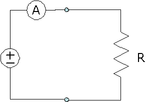
Figure 4: A straight forward setup
However, in the real world, the wires have resistance as well so the calculated value is the sum of all resistance in the loop.
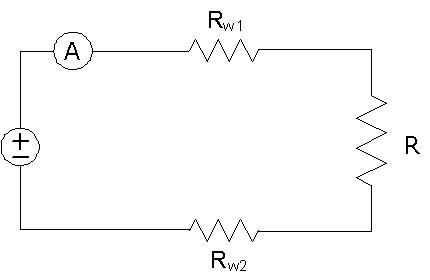
Figure 5: The resistance of wires
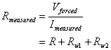
Equation (10)As shown in equation (10), the measured value of resistance contains error terms introduced by the wires. Conceptually, error terms can be eliminated by measuring the voltage across the resistor at the same time.
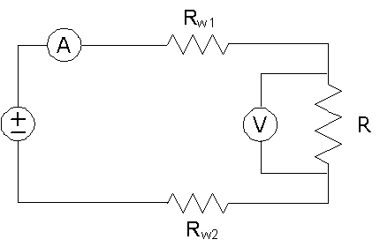
Figure 6: Take the voltage across the resistor
With the modified setup above, the readings are exactly the current flowing through the resistor and the voltage across it. However, there is also resistance on the wires connecting the voltage meter to the resistor.
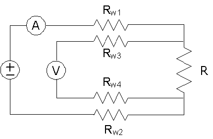
The resistance on the wires with ampere and voltage meters
The error terms can be analyzed as following.
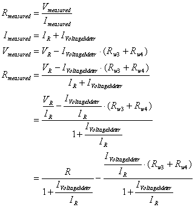
Equation (11)As shown in equation (11), the measured value of resistance of the resistor under test is not related to the resistance of the wires connecting the voltage source to it. Furthermore, if the current flowing through voltage meter is kept infinitesimal, the error terms get eliminated. It can be done by simply having a high impedance voltage meter or wires.
Consider to implement Figure 7 as a voltage (or current) source with force and sense lines. It then makes a so-called four-wired connection.
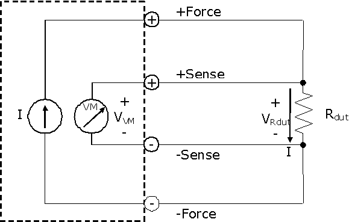
Figure 8: Four-wired connection
Suppose now we have this connection on a printed circuit board. Based on equation (11) and the previous discussion, the bigger the impedance along the sense loop is, the better accuracy is. It can be done by separating force and sense lines and narrowing the line width.
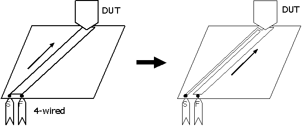
Figure 9: Increase sense impedance by separating force and sense lines and narrowing the line width